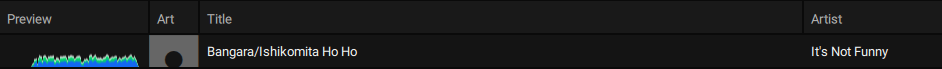
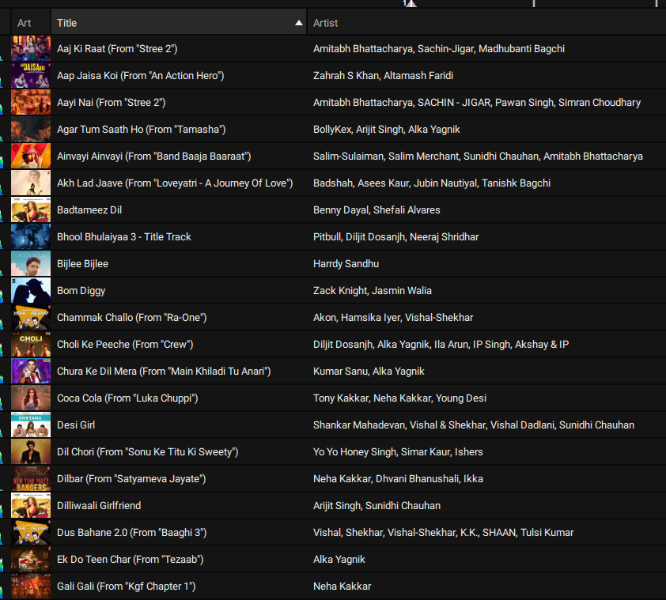
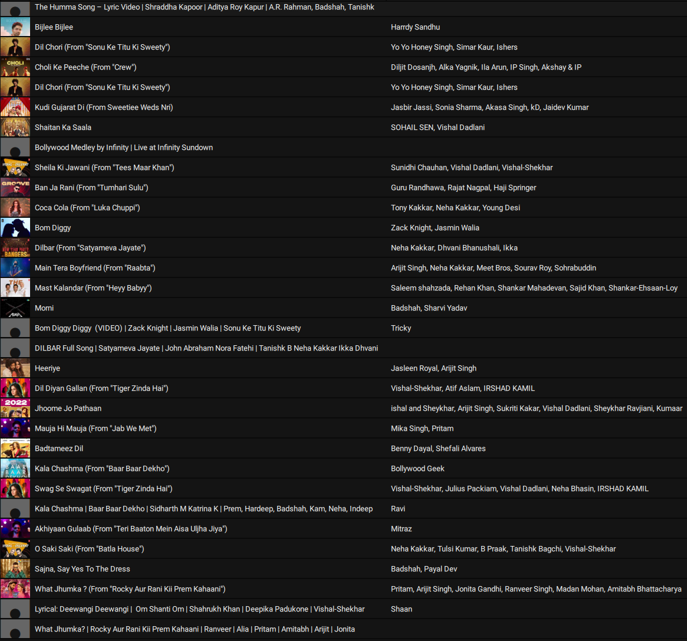
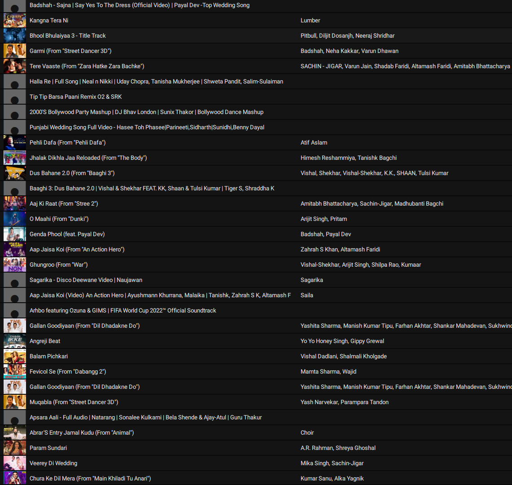
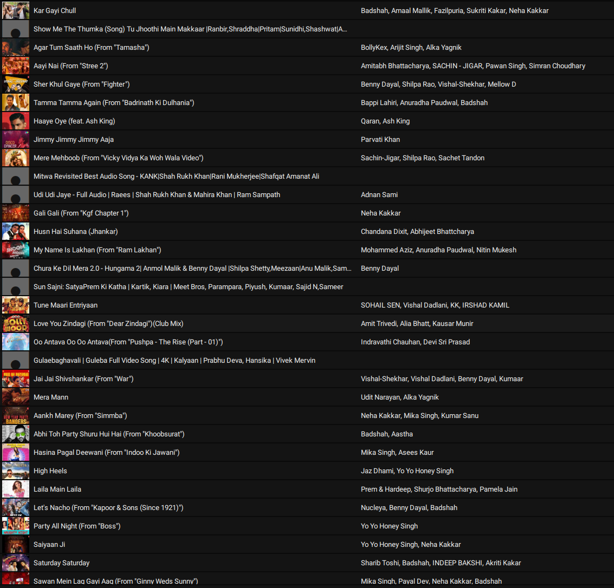
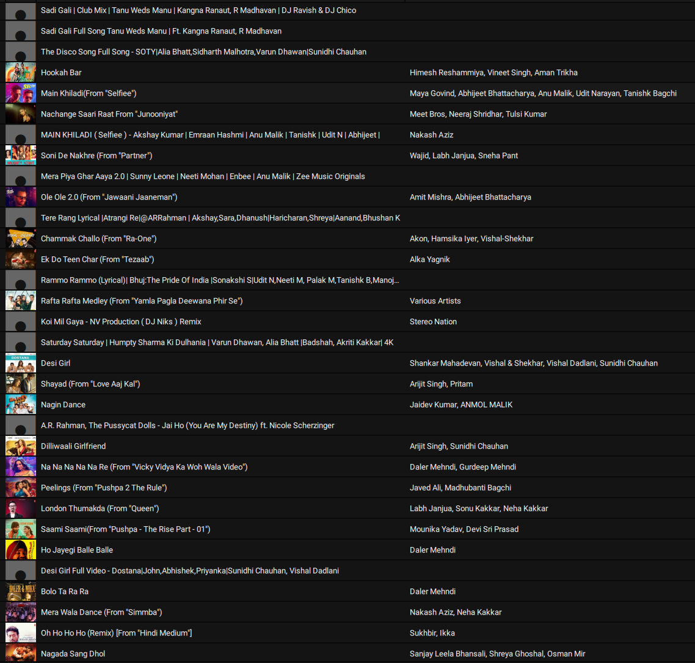

Song Lists
Must Play Songs

Slow Songs for Dinner and at the Start
- Daffodil Mala Harshana Dissanayake Live Cover Naada Yaththra.m4a
- Eka wasanthayaka Harshana Dissanayake Live cover - Naada yaththra.m4a
- 2FORTY2 MAATHRA LIVE Chandana Allen H.R. Jothipala Feat. Billy Fernando.m4a
- Ada Thaniyen Ma - SHIHAN MIHIRANGA Official Music Video Sinhala Songs.m4a
- Ahasai Oba Mata Hiru Unplugged - EP 10 (Stereo).m4a
- Ambili mame Nalin Perera Baila Sadaya @RooTunes.m4a
- Amma 6th Lane Hiran Thenuwara Tharaka Karunanayake Fill T Official Music Video.m4a
- Ananthayata Yana Para Dige Indrachapa Liyanage Coke RED @RooTunes.m4a
- WAYO - Api Kawuruda (Official Music Video).mp3
- Ashanthi - Dilhani Duwani Remake - Official Music Video.m4a
- B&S Mashup Cover Unmadini Hanguna The News Coke RED @RooTunes.mp3
- Chandani Payala - Bhatiya & Santhush.m4a
- Chandimal Fernando Kimada Sumihiriye Live Cover @ CT Show 2015.m4a
- Chandrame Ra Paya Aawa - Billy Fernando, Devashrie De Silva - COVER.m4a
- Dampata Handawe Sachin Rakitha Eranga Official Music Video Sinhala Sindu.m4a
- Dawasak Pala Nathi Hene - Mithra Kapuge with 2FORTY2 MAATHRA.m4a
- Diurala Pawasanna CENTIGRADZ Coke RED @RooTunes.mp3
- DMAJOR Live in Concert I Medley I.m4a
- Ganga Addara I Hector Dias I DMajor Live in concert.m4a
- Geeyakin Kese Clarence Wijewardena & Shyami Fonseka Sinhala Duet Songs.mp3
- Gum Nade - Rosa Kale Movie - Santhush ft. Umariya - Official Music Video.m4a
- Hada wiman Dorin Cover by Hector Dias with D MAJOR.m4a
- Hadawatha Illa (Remake) - Priya Sooriyasena [www.Music.lk].m4a
- Hector Dias , DMAJOR, ..Old is Gold!!..m4a
- Hiru Mal - Ruwan Hettiarachchi ft Umaria.m4a
- Hithumathe Romesh Sugathapala IRAJ Official Music Video Ma Desa Neth Nopiya Balapu.m4a
- Jeewithe Tharuna Kale Billy Fernando, 2forty2.flac
- Kameliya Mal Suwadata - Kithsiri Jayasekara [lyrics video].m4a
- Labendiye La Signore 2021.flac
- Maage Mathake Cover by D MAJOR with Hector Dias.m4a
- Malata Bambareku Se Clarence Wijewardena Sinhala Classical Songs.mp3
- Master Sir - Neela Wickramasinghe @ Dell Studio Season 03 ( 29-01-2016 ) Episode 01.m4a
- Mihiraviye - Shihan Mihiranga Official Audio MEntertainments.m4a
- Milton Mallawarachchi - Eda Raa Live Cover by Infinity.m4a
- Nadee Ganga(Unplugged) Chitral Chity Somapala 2016.flac
- Nisansale.m4a
- Oba Dutu Ea Mul Dine The Gypsies 2003.flac
- Oba Gawa Cover By D MAJOR with Hector Dias.m4a
- Oba Hinda Ba Mata Me Tharam Iraj & Samitha Official Music Video.m4a
- Olu Nelum Neriya Rangala Dewmini Fernando & Kawya Sathsarani.m4a
- Pata Dedunu Sedila Sunil Edirisinghe.mp3
- Pehesara Obe Adare - Centigradz - Asai Man Piyabanna OST - Official Video Song.m4a
- Ranidu-Hinahenne Mung (Nil Nayaniye) Official Music video.m4a
- Ran_Kurahan_Mala_Sema_Bathiya_And_Santhush_Sarigama_lk.mp3
- Rookantha Goonatillake - Anganawo.m4a
- Rookantha Gunathilaka - Sanda Pinidiye - l Live @ Bhava 2019.m4a
- Rookantha Gunathilaka - Sudu mudu welle රූකà·à¶±à·Šà¶ ගුණà¶à·’ලක - සුදු මුදු à·€à·à¶½à·Šà¶½à·š.m4a
- Salalihiniyo Hector Dias Cover #hectordias #dmajor #srilanka.m4a
- Sanasenna Nalawenna à·ƒà·à¶±à·ƒà·™à¶±à·Šà¶± නà·à¶½à·€à·™à¶±à·Šà¶± සුද෠Athul Adhikari.m4a
- Sandawathiye_Centigradz.m4a
- Shihan Mihiranga - Perada Mawu Sina (Lyrics).m4a
- Sihina Ahase Wasanthe Cover By Hector Dias With D MAJOR #wedding #events.m4a
- Sihina Nelum Mal @ Tone Poem with Mariazelle Goonetilleke.m4a
- Sililara Sitha Nayana(2FORTY2 Remake Lounge) Senanga Dissanayake, 2forty2, CeyMusic.flac
- Sithin Ma Nosali - Billy Fernando live in Concert 2012.m4a
- Sudu Paravi Rena Se - Priya Sooriyasena Acoustic Version.m4a
- Suragana Kirilliye.m4a
- Surangana_Kirilliye_Infaas_Noor.Ud.Din_Sarigama_lk.mp3
- Suwanda Danee - Kasun Kalhara Sudu Muthu Rala Pela Live [Official Video].m4a
- Suwandai Mal Suwanda Se - Kasun Kalhara and Sashika Nisansala.m4a
- Tharu Mal Wage LIVE - Rookantha & Chandralekha.m4a
- Unity Band - Sili Sili Seethala (සිලි සිලි සීà¶à¶½) Radeesh Vandebona Unity Band Wedding Session.m4a
- Unmadini Hanguna - Version #2 Bathiya N Santhush.m4a
- Yayata Payana Prihan Natasha Iraj Official Music Video.m4a
- Oba nidanna ( Cover ) @ChitralChitySomapalaMusic at Untitled - Live.m4a
- Oba Laga Nathi Me - Rookantha Gunathilaka.m4a
- Neka Uyan Wathu Pradeepa Dharmadasa & Amarasiri.m4a
- Sithe Susum - Clarence the LEGEND Unplugged 02.mp3
Fast Songs for the Party
- 2FORTY2 - Me Amba Wanaye Feat. Billy Fernando Original Song - C T Fernando.m4a
- 2FORTY2 Live - Kimada Sumihiriye CT Fernando Cover Ra Ahase Nelum Pokuna.m4a
- Aaley Mal - Kanchana Anuradhi Official Music Video.m4a
- Adambarai baluwamanam - Iraj Ft. Sureni & Killer B.m4a
- Adara Lowe JAYA SRI Coke RED @RooTunes.mp3
- Adare Hithenawa Dakkama Billy Fernando, 2forty2, Devashrie De Silva.flac
- Adare Hithenawa Dakkama (Remake) Uditha Sanjaya (HD).m4a
- Adare Soya The Gypsies 2019.flac
- Adare Soya - Dushan Jayathilake - Official Music Video Sinhala Songs.m4a
- Ranidu - Ahankara Nagare (Official Original Upload).mp3
- Alawanthiyak Ashanthi De Alwis Randhir Official Lyrical Video Sinhala Songs.m4a
- Amathaka Karannepa The Gypsies 2019.flac
- Ananthayata Yana Para Dige Kasun Kalhara.mp3
- Ananthayata yanawamai Official Music Video - Senaka Batagoda.mp3
- Andura Ira Clarence Wijewardena Sinhala Classical Songs.mp3
- Asurin Mideela - Priya Suriyasena Priya Sooriyasena.m4a
- Atha Dilisena Hiru Sandu Billy Fernando, 2forty2, Devashrie De Silva.flac
- Awadi Wanna Peter Rosario Ranjith Atigala Baila Sadaya @RooTunes.m4a
- Aya Dompe Aya Mariazelle Goonetilleke Chandani Hettiarachchi Baila Sadaya.m4a
- Ayyo Saami Windy Goonatillake, SANUKA 2022.flac
- Ba Ba Mata Enna Ba Jacqualine Hettiarachchi Dinu Sanjuna Baila Sadya.m4a
- Baila Gamuda Remix Karala Bathiya & Santhush 2010.flac
- Bambara Patikka Iraj ft. BK Samitha Official Music Video Sinhala Songs.m4a
- Chandralekha Perera - Sitha Sanasuma Windemi Oba Hinda (Dell Studio Version).m4a
- Chandrayan Pidu.m4a
- Clarence Baila Medley (2FORTY2) 2forty2, Billy Fernando.flac
- Dawasak Ewi (Duet Version) Piyath Rajapakse, Raini Charuka 2021.flac
- Desin Pe La Signore 2021.flac
- DIAS - FREEZE (Official Music Video).m4a
- Diganthaye Rookantha Goonatillake 2018.flac
- Dinaka Me Nadee Theere Clarence Wijewardena Sinhala Classical Songs.mp3
- DJ Mass - Pem Kekula Ft. Apzi & Romaine Willis [Official Music Video].m4a
- Dunhinda Manamali Annesley Malewana 2001.flac
- Galana Ganga Charitha Attalage, Ravi Jay 2017.flac
- Gayu Gee Atheethe Mariyasel Gunathilaka The Music Room RooTunes ​.m4a
- Gedara Yan The Gypsies 2023.flac
- Gini Anguru Gode The Gypsies 2019.flac
- Gypsies & Marians Medley Sarith and Surith 2022.flac
- Hello Hello - Chinthy,Centigradz,Ashanthi [www.BNRmedia.com].m4a
- Hiruge Lowedi Clarence Wijewardena Sinhala Classical Songs.mp3
- Ill Mahe Kurullo Nisala Kavinda, Yuki Navaratne, AKIIY 2023.flac
- Ingi_Marana_Tharu_Rena_K.Sujeewa_Sarigama_lk.mp3
- Issara aadikale wayana Keerthi Pasquel Baila Sadaya.m4a
- Jeevithe Tharuna kaale (Live ReMake) - Ra Ahase Live in Concert 2017.m4a
- Kaandam Daasa Chinthy, Raini Charuka 2024.flac
- Kaandam Dasa Tharumini Ochcham Neela Kandu Gatee Raini Charuka Youth on Red@Rupavahini RED.mp3
- Kakiri Palena Tikiri Hinawai 68 Baila Dance Mix By - Djz Rowdy Nethsara ( 140 BPM ).m4a
- Kakiri Palena M. S. Fernando.m4a
- Kandy Lamissi Mariazelle Goonetilleke Chandani Hettiarachchi Baila Sadaya.m4a
- Kasthuri - Santhush, Ashanthi Ft.m4a
- Kirilli Ran Kirilli - Desmond de Silva - (Live Cover by Infinity) - Sundown Sessions I.m4a
- Komaliya Prageeth Perera 2023.flac
- Koththamalli The Gypsies 2015.flac
- Kotthu Iraj Weeraratne Official Music Video Sinhala Songs.m4a
- Kurumitto The Gypsies 2003.flac
- Kusumi Latha Renu Latha (Medley) The News RED @RooTunes.mp3
- Laila Sarith - Surith & The News Coke RED @RooTunes ​ ​ ​.m4a
- Lassana lokaye - Glory ft Sunil Perera and Piyal Perera.m4a
- Latha The Gypsies 2001.flac
- Lelena(Remix) Nilan Hettiarachchi 2021.mp3
- Linda Langa Sangamaya The Gypsies 2001.flac
- Lorenso The Gypsies 2001.flac
- Love Sama The Gypsies 2001.flac
- Lunu Dehi The Gypsies 2019.flac
- Ma Ha Senehasa Paala Lyrical Video Milton Mallawarachchi Lyrical Video.mp3
- Mage pale Adura Nasanna Jude De Zoysa @RooTunes.m4a
- Mal Osariya @DushanJayathilake @lunudehiband â¤ï¸ðŸŽ™ï¸.m4a
- Mame Ape Kalu Mame Annesley Malewana 2014.flac
- Manali Windy Goonatillake, SANUKA 2022.flac
- Manali Yuki Navaratne, Ravi Jay 2022.flac
- Manda Pama - Umariya ft. News Live @ O Fans Festival 2020.m4a
- Mango Kalu Nande(Radio Version) Annesley Malewana 2021.flac
- Massina.m4a
- Mata aloke genadevi Ranidu, BK, Krishan, Iraj 2012.flac
- Mee Wadayaki Peter Rosario Thisara Fernando Baila Sadya @RooTunes.m4a
- Meka Nam Pissuwak Bun (Remix) - Anushka Udana (Wasthi) DJ EvO Sinhala Remix Songs Sinhala DJ.m4a
- Mottu La Signore 2020.flac
- Muthu Manike Ude Rayin Clarence Wijewardena Sinhala Classical Songs.mp3
- Muwa Hasarali Sagaraye Lyrical Video Clarence Wijewardena Lyrical Video.mp3
- Na Na Nay The Gypsies 2001.flac
- Naaree Chinthy Official Music Video Sinhala Sindu Sinhala Songs Hip-Hop Rap Songs.m4a
- Naden (Remix).m4a
- Nasuna - Smokio Ft. Dinesh Gamage Chamath Sangeeth - Official Music Video.m4a
- Neela Kadugate Raini Charuka, Gayya 2012.flac
- Nelum Male Pethi Kadala Mariazelle and Walter Fernando (brother of M S Fernando) Mariazelle.m4a
- Nelum Vilen Pena - Dushyanth Weeraman RE-MIX DJ SHAN-L 2021.m4a
- Neththara Bathiya & Santhush Officia Music Audio MEntertainments Sinhala songs Sindu.m4a
- Nil Dasin Surenie De Mel Official Music Video Sinhala Songs.m4a
- Nilwan Muhudu Theere Hector Dias Official Cover.m4a
- Nilwan Muhudu Theere Sarith - Surith and The News Coke RED.mp3
- Nondi Simaiya The Gypsies 2023.flac
- Nondi Simaiya.m4a
- Nurawani - Anushka ft. News Live @ O Fans Festival 2020.m4a
- Oba Inne Koheda Kiya (Lassana Lokaye) Dushan Jayathilake Sinhala Songs.m4a
- Oba Laba Ganna Chandani Hettiarachchi Mariazelle Goonetilleke Baila Sadaya.m4a
- Ojaye The Gypsies 2019.flac
- Parasindu Kolompure The Gypsies 2023.flac
- Pathum Pirila.m4a
- Pem Lowe Live Remake Ra Ahase Melbourne 2018.m4a
- Perum Puragena Senanayaka Weraliyadda Coke RED @Roo Tunes.m4a
- Piti Kotapang None The Gypsies 2001.flac
- Piyumehi Panibothi - Taxi Christmas Mix EP 03.m4a
- Polkatu Hande Mita Wage.m4a
- Rahasai Sonduru Jeeve @ Tone Poem with Mariazelle Goonetilleke.m4a
- Rambari La Signore 2021.flac
- Ran Kurahan Mala [NaNaNeNa] BNS Studio Live 2016 Mahesh Denipitiya Live Creative Music Direction.m4a
- Ran Rasa Wage Saman De Silva Ernest Soysa Hector Wijesiri.m4a
- Ran Van Mal Dam - Centigradz.mp3
- Rasa Pirunu Katha Shyami Fonseka Sinhala Classical Songs.mp3
- Ratakin Eha (Unplugged) - Priya Sooriyasena.m4a
- Res Wihidena Samanaliyakagen B & S lyrics video - Mathra.m4a
- Rookantha Goonathilake medley Live in concert I #dmajor #hectordias.m4a
- Rookantha Goonatillake - Diganthaye.m4a
- Sada Sulan Hamanne The Gypsies 2023.flac
- Saima Cut Vela @ Tone Poem with Sunil Perera.m4a
- Salli Sarith and Surith, K V N 2023.flac
- sanakeliye sanda eliye - clarance wijewardana.mp3
- Sanda Gilunath - Clarence Wijewardena Original Sinhala Songs Play LK Music.mp3
- Clarence Wijewardena - Sanda Paane Gaman Yanna.mp3
- Sanda Walawan - Clarence Wijewardena Original Sinhala Songs Play LK Music.mp3
- Sandapana Wage Dilenne Rookantha Gunathilake Hiru Unplugged.m4a
- Sanden Eha Milton Mallawarachchi Sinhala Classical Songs.mp3
- Seedevi Piyath Rajapakse, Lahiru De Costa 2024.flac
- Signore The Gypsies 2001.flac
- Sihina Lowe Nalin Perera Peter Rosario Baila Sadya @RooTunes.m4a
- Sinhala All time Hits Medley Sarith and Surith 2022.flac
- Siri Sangabodhi Maligawedi BNS Studio Live 2016 Mahesh Denipitiya Live Creative Music Direction.mp3
- Sith Sith Sith Rookantha Goonatillake, Raini Charuka 2025.flac
- Sithin Prema Wadana - Gassena Paddena Lassana Loke - (Mashup Cover by Infinity) - Sundown Sessions I.m4a
- Sithin Sina Sisi Windy Goonatillake, Raini Charuka 2020.flac
- Sokare Chinthy 2006.flac
- Suba Upandinayak - Gypsies Audio.m4a
- Sudu Adumin JAYA SRI Coke RED @RooTunes.m4a
- Sudu Gawuma La Signore 2021.flac
- Clarence Wijewardena - Sudu Menike Mage Menike.mp3
- Sudu None The Gypsies 2003.flac
- Suraliyaka Wagei Ruwina Somasiri Pranandu Baila Sadaya Rupavahini.m4a
- Tharumini (feat. Raini) Chinthy 2020.flac
- Tikki Tikiri Sina Paala Dalreen Suby Baila Sadaya @RooTunes.m4a
- Udarata Niliya Annesley Malewana 2012.flac
- Udarata Niliya Annesley Malewana Sinhala Classical Songs.mp3
- Uncle Jhonson The Gypsies 2019.flac
- Unmada Prema Geeya - BNS x Yohani ft. Kaizer Kaiz Official Music Video.m4a
- Visekari Rockabye Baby Mashup - Live at Interflash 2020.m4a
- Waduwa The Gypsies 2001.flac
- Wasanthaye Mal Kakulai Indrani Perera Sinhala Classical Songs.mp3
- Wassanayata - Umaria ft Infinity Live at Interflash 2020.m4a
- Wessanthara Raja Putha - Ra Ahase Live in Concert 2017.m4a
- Yaman Bando The Gypsies 2024.flac
- Yana Thanaka - Mihindu Ariyaratne (Live Cover by Infinity) - Sundown Sessions I.m4a
- Yanna Rata Watey Desmond De Silva Ft. Don Sherman (Des N Don).mp3
- Yowun Sihina Loke 2forty2.flac
- Yowun Sihina Loke Mariazelle Goonetilleke.m4a
- Aane Dingak Innako - Marians.m4a
- Oba Inne Koheda Kiya + Sal Mal Wel Gypsies Awurudu Pedura with Derana.mp3
- Niyare Piyanagala NP Creationlk.mp3
- Sal Mal Wal Chandani Hettiarachchi.mp3
- Sara Sadisi Samitha Mudunkotuwa DJ RANDY REMiX.m4a
- Ananthayata Yanawamai - Senaka Batagoda.m4a
- Sanasennam Ma - Senaka Batagoda.m4a
Non-Stop & Baila for the Dance Floor
- Ada Wei Il Dina
- Adare
- Adareta Kiyana Katha
- Ahankara Nagare
- Ajuthapara
- Amathaka Karanna Epa
- Ananthayata Yanawamai
- Api Kauruda
- aradhana kara
- asurin mideela
- awe wana bambarek
- ayarin josephin
- bambara nade
- bambara pahasa
- bambara petikka
- Bambara Wage Visekaraya
- Chuuda maanikya
- chuuda manike
- dakina dakina
- desa piya gath kala
- dompe aya
- epa yanna
- galkisse
- Gayu Gee
- gela wata
- gele ran maala
- gini anguru gode
- golu hadawatha
- gon wassa
- Ha Mal Pipenne
- hada selena
- hadawada daa
- hitha hiriwetunado
- hitinna poddak
- il mahe kurullo
- ingimarana
- Iri Thalunu wala
- issara aadi kaale
- kale ukule thiyala
- kandy lamissi
- kekiri pelena
- kimada sumihiriye
- ko inna
- kodi gaha yata
- koi yanne
- kollupitiye junction
- komaliya
- konde nethath
- kothamalli
- kumariyak
- lai lai lai
- lassana amba gasak
- Lassana Lokaye
- lassanata pipuna
- lelena
- linda langa sangamaya
- lorensoda
- lowe sema
- lunu dehi
- lyla
- ma adarei nangiye
- maa adarei
- maa handawala
- mage pele andura
- maha sayure
- mama bohoma baya wuna
- manali
- mariyasilo
- mata hithanna bae
- mee amba
- meewadayaki
- menna muu
- mod goviya
- muhuda handana
- muhude yamu
- na na na na na
- na na na ne na na
- Nandana Sihina Gange
- nelum male
- nelum male pethi
- nelum wilen
- nethara
- Nilwan Muhudu
- Nilwan Muhudu theere
- oba dutu
- oba laba ganna
- obage ruwa wage
- obage ruwa wage mai
- Original- Punsanda Paya
- oru kandath
- oya mage nan
- oye ojaye
- paawena peerisiyak
- panhinda maaha
- parasindu colompure
- pem lowe
- peni waraka madula
- peraliyan bara karathe
- pira rata
- pita rata wisthara
- piti kotapan
- piti kotapang
- piyamanne
- piyamba yanawa ma
- piyamenne
- piyumehi peni bothi
- polkatu
- polkatu hande
- polkatu maale
- pulli gona
- rae pel rekala
- rampota thelambuwa
- ran menike
- Ran Ran Ran ft. Lose Yourself
- ranga hala
- Rangahala
- Ratakin Eha
- rosa
- roselina
- rowly bowly
- rupa sobawata
- saima
- saima cut wela
- samuganne na
- samuganne nae
- Sanda Basa giya
- sanda gilunath
- sanda paane gaman yanna
- Sandak negi
- sandalatha
- sara sadisi
- sarath sande
- sayurata
- seethala sanda eliye
- senda walawan
- sheela
- sihina lowe mihira mewu
- Sihinen Sihina Ma Handawanawa
- sihinen sihinen
- sili sili
- Siri Sangabodhi
- sith sith
- sudu andumin
- sudu roasi
- sukomala banda
- Sundariye
- suraliyaka wage
- suranganawi
- surappa
- suwandai male
- suwandai muwe
- sway
- taxi kaaraya
- tharahin ahaka bala
- tharuna jeewithe
- tikiri malee
- udarata
- uncle johnson
- wada kaha
- wadu weden
- wasantha kaleta
- wisekari
- yaman bando
Hindi




